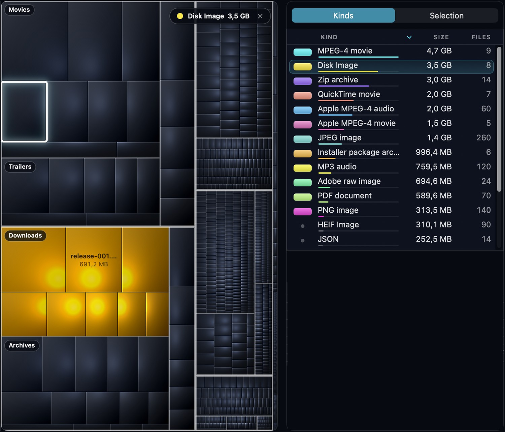

Choisissez Fichier ▸ Ouvrir dossier… et sélectionnez le dossier ou le volume que vous voulez analyser (le panneau des volumes affiché au lancement liste aussi vos disques). Une fenêtre de suivi s’affiche pendant l’analyse ; un gros dossier ou un volume entier demande un peu de patience. Quand l’analyse est terminée, la fenêtre principale s’ouvre :
Cliquez sur un type dans la liste : tous les autres types s’assombrissent et perdent leurs noms, si bien que seuls les fichiers de ce type brillent : où sont toutes mes images disque, mes vidéos, mes archives ? Une pastille en haut à droite de la carte indique le type et sa taille totale ; cliquez sur sa croix × pour quitter ce mode. Tant qu’un type est sélectionné de la sorte, la liste continue de l’afficher, même si vous sélectionnez d’autres éléments entre-temps.

La colonne latérale et la fiche d’information peuvent être masquées pour laisser plus de place à la carte : utilisez les boutons de la barre d’outils ou le menu Fenêtre (Statistiques par type de fichier, Liste de sélection, Information). La fenêtre se souvient si la colonne latérale était affichée et quel onglet était au premier plan.
Dans le menu Affichage vous choisissez si le contenu des paquets (applications et autres bundles) est affiché comme des dossiers, si l’espace libre et l’autre espace sont dessinés sur la carte, si la taille physique plutôt que logique des fichiers compte, vous zoomez dans les dossiers et en sortez, et vous choisissez si l’arborescence est à côté de la carte ou au-dessus (Diviser horizontalement).
Disk Inventory Xs a 12 couleurs prédéfinies. Elles sont affectées aux 12 « plus gros types » du premier dossier que vous ouvrez (l’idée derrière ça est qu’il est de plus en plus difficile de distinguer les couleurs si elles sont plus de 12). La palette est choisie pour rester distinguable pour les personnes atteintes des formes courantes de daltonisme.
Les autres types partagent un gris atténué et affichent un petit point terne au lieu d’une pastille dans la liste des types. On ne peut pas les distinguer par la couleur, mais l’arborescence, les noms sur la carte et l’onglet Sélection disent ce qu’ils sont.
L’affectation des couleurs est faite pour tous les dossiers ouverts : les fichiers du même type ont la même couleur dans tous les dossiers ouverts. Donc si le premier dossier utilise les 12 couleurs et que vous en ouvrez un deuxième avec des types totalement différents, il ne reste plus de couleur et ses types sont gris. Le seul moyen de refaire l’affectation est de quitter puis de relancer Disk Inventory Xs.
Disk Inventory Xs utilise toujours une apparence sombre. Il suit les réglages d’affichage de Réglages Système ▸ Accessibilité ▸ Affichage : avec Réduire la transparence les panneaux de verre deviennent pleins, avec Augmenter le contraste les contours deviennent blancs et les bordures plus nettes, et avec Réduire les animations la colonne latérale ne glisse plus.